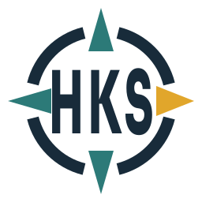
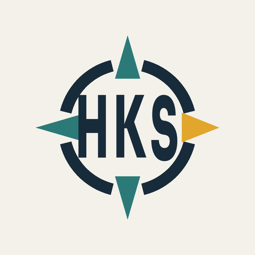

Primary · white
Phase 1 · production identity QA
The Wayfinder, rebuilt for real use.
Outlined SVG masters, small-size variants, restrained lockups, and one-colour applications for the Holiday Kenya Safaris WordPress build.
Internal specimen. The Mara background below is generated presentation material and is not approved for the public website.
Core lockups
Full colour is preferred on White or Pale Mist. Use the one-colour or reversed masters where the background requires it.
Icon · Pale Mist

Reversed · Midnight Navy
One colour · Midnight Navy
Small-size behaviour
The full icon begins at 56px. Below 48px, the dedicated compass/H favicon replaces it.
Native-size ladder
16px
32px
48px
56px
96px
144px
16px raster · 8× nearest-neighbour
Header and avatar placements
The compact icon is a responsive substitution, not an app icon or a second brand.
Circular avatar safe crop

Physical and difficult backgrounds
Vector masters remain the production source. These panels test silhouette, legibility, and background discipline only.
Production palette
Saffron is directional emphasis, not body text. Navy carries the system's most important information.
Midnight Navy · #182B3A
Lake Teal · #2C7A78
Wayfinder Saffron · #E1A62B
Pale Mist · #F3F1EA
White · #FFFFFF